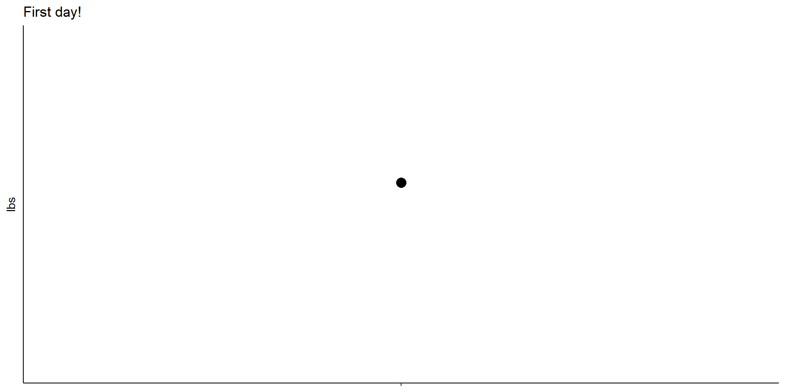
Real Time SPC - Weight Loss
The Excitement of Real Time SPC!
I’m going to be adding to this project regularly. SPC (Statistical Process Control) is extremely useful and not just in manufacturing. Almost anytime data occurs over time it can be helpful to use control charts to tell if a process is changing, and when to react vs. leaving it alone.
(NOTE - I started this as a sequential journal, if you check back in a week or two I believe I’ll have this section rewritten, probably condensed, and add some periodic summaries that make it easy to catch up)
I’ll write more in another place about the details of SPC, this is an applied project.
The subject? Me.
Let’s say I want to get in the best shape ever, because why not? Part of this includes losing some weight. Well, we say “weight” but really I mean body fat.
If you’ve ever tried weighing yourself, you might notice fluctuations. This kind of variation can make it confusing, am I actually progressing toward my goal or not?
Control charts will help us know if we are in fact progressing, even with variation in the data.
We will set up control limits to show whether the variation we’re observing is unusual, or routine.
In this case of weight loss, we want to see the numbers going downward, to the goal weight. After this is achieved, we want to continue to monitor the weight to make sure our progress is maintained! Control charts will help us know if I’m maintaining, or if something is changing (further loss, or gain).
Why is this project important?
When something exhibits variation over time, it can be difficult to know when to react and when to leave it alone. For example quarterly sales figures - if you’re reacting to short term movements you might overreact and reduce employee headcount when sales dip. Tracking data over time on a control chart can help you know if something has really changed or not and avoid overreacting.
SPC textbooks and tutorials often walk through real examples and case studies which is great. But you’re generally given a lot of data (relatively) at once and the real excitement, the true beauty of SPC is working through it point by point. At every single point a decision must be made - act or don’t. This project will be in real time, with real results. Since I don’t know the future yet, I don’t know what it’s going to look like. By posting this project in public, I will be extra motivated to “do well”. If I’m not progressing toward my goal, I’ll be sure to act and make the necessary changes.
Starting a new control chart
To start with control charts we need some data. You probably already have some, but for this project let’s say we really don’t have any data.
I plan to track my weight weekly, because that’s a meaningful time frame to me, and easy to remember. Every Monday, or close to it. I feel monthly isn’t often enough, if I’m progressing I want to know about it (encouraging!), and if I’m not progressing I want to know relatively soon so I can change my behavior (more exercise, less calories) and drive the progress I need.
It’s going to take many weeks before I can start a control chart, I can plot the dots but I want to jumpstart SPC. So I’m going to make some assumptions.
Let’s assume that my weight is relatively stable right now, and that any variation I observe (up or down) is not indicative of a true change, it’s just fluctuations over time. I might be able to pinpoint why the variation is happening but it doesn’t matter for my question at hand - I just want to know if “the number is going down”.
I’ll assume that this weight variation day to day is similar to what it would be week to week. Stable overall with some ups and downs.
So to get started, I’ll weigh myself daily for a week to get an idea of what the variability is. Then I’ll use that to calculate the control chart, and start tracking weekly. After some weeks (probably at least 5 or 10) I can use the weekly variation to create a new chart.
Did you catch that? If I have to wait so many weeks to get started with SPC, hopefully my weight has already changed significantly in that time! We are working with an imperfect, real world situation here. My control limits based on daily weights may not be exactly representative of weekly variation, but we start with what we have. It’s better to act quickly and get moving than to wait for perfect information. (And perfect info doesn’t exist anyways)
I’ll take the measurement in the morning to be consistent.
Run Chart to begin
To start out, I’m just going to plot each point in order as it happens. This is sometimes called a run chart.
First point
Just a note to get started, I’m not going to share my actual weights here. One great thing about a control chart is that I can create it and share it, and you can view and interpret it without labeled numbers. Just the points themselves and the control limits.
I started on 6/23, let’s look at this first point.
Isn’t that exciting!? Our first datapoint. I can already tell you it’s not what I want. It’s far enough from my goal that one data point is enough. Let’s look at where I want to be:
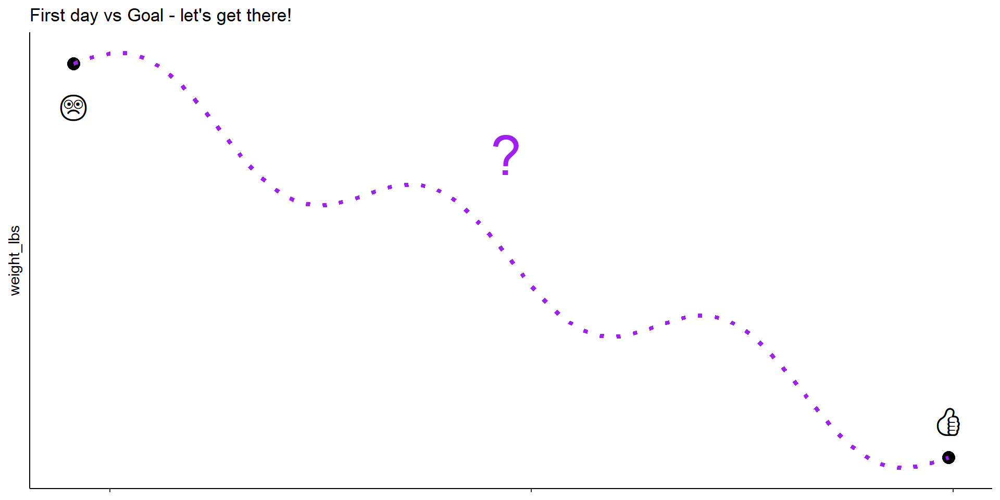
Here we see the journey, I know where I’m beginning, and where I want to be. We don’t know what it’s going to look like in between! Once I reach the goal I’ll move to maintenance tracking, it isn’t so useful to improve something then lose the progress later.
Day 2, 6/24/25
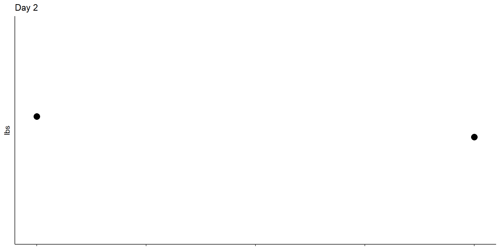
It’s hard to tell if anything is happening yet. I set the y limits to be constant, so the y axis isn’t changing with every new dot.
Day 3, 6/25/25
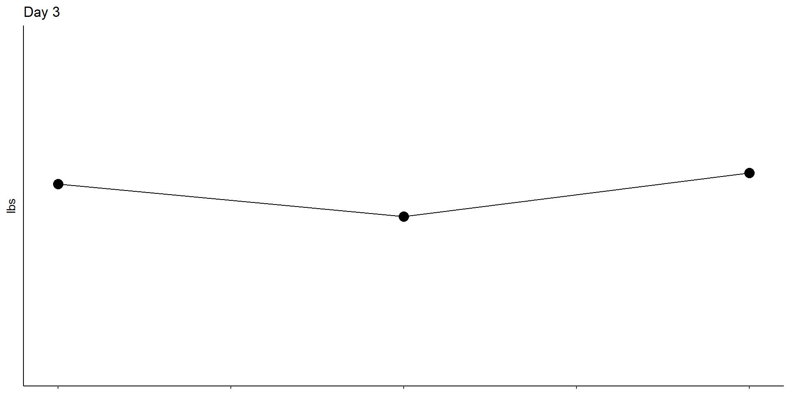
Ok we are seeing some day to day variation. This is the type of variation that can be misleading! If I was weighing myself weekly or monthly and seeing this kind of variation, I might alternate between being encouraged and discouraged.
I know you can’t see the y axis scale, I’ll tell you from day 1 to day 2 the weight measurement decreased by 0.6 lbs, and from day 2 to day 3 it increased by 0.8 lbs. This variation doesn’t indicate an actual lasting change, it could be for many reasons but for the context of reaching my goal, it’s not telling me anything useful.
Day 4, 6/26/25
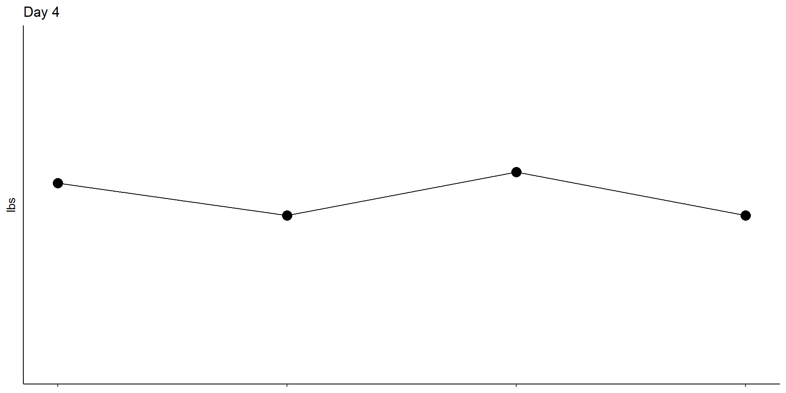
On day 4 the measurement went “down” again, so let’s see what day 5 holds next.
Day 5, 6/27/25
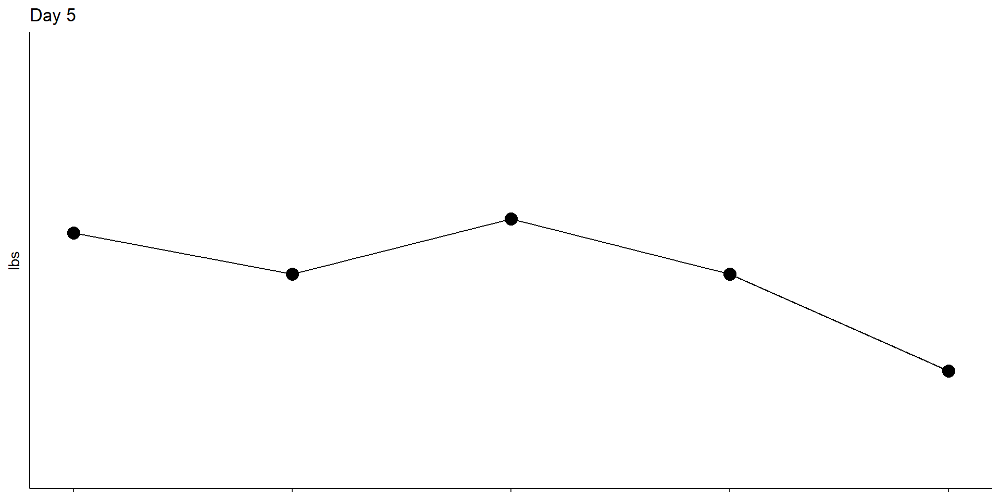
Wow! That’s pretty cool, down again, and what looks like a large decrease! Maybe a sustained decrease! It’s hard not to be encouraged by something like this. I’m gonna be crushed on day 6 if it goes back up again. I wasn’t going to do this yet, but let’s make a control chart to see if I have a reason to be be encouraged yet…
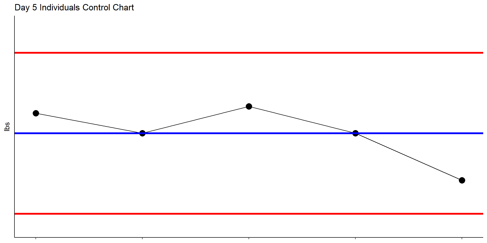
There we have it. Based on what I know so far, my limited knowledge of 5 datapoints, I don’t have a reason to think this process has changed yet. The blue line represents my estimate of the location of my weight, what it’s current value is. This is the average (mean). The red lines are control limits. If the process stays the same as it was when the limits were calculated, we expect almost every future point to be somewhere between these two (red) limits.
Because the day 5 weigh-in is inside the limits, I can’t say my process (weight) has changed yet.
But you say, you don’t have enough data to know anyways! That’s right, I don’t. We are just getting started. I’m curious to see what day 6 holds.
Day 6, 6/28/25
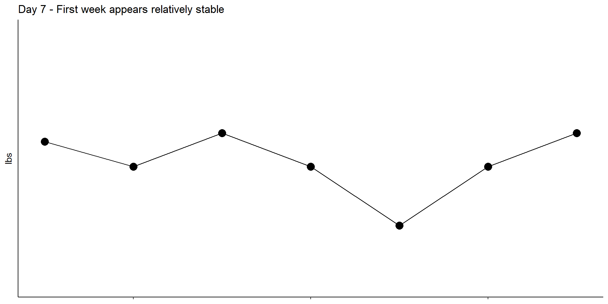
Looks like day 6 went back “up” again. This isn’t unusual for a process with variation over time. Right now we’re getting a good estimate of how much the measurement can change day to day, and about where it’s located (average)
Day 7, 6/29/25

Day 7, first week already! Seeing two consecutive points moving up might be discouraging, but again our run chart soon to be followed by control chart helps keep it in context.
Week 1 thoughts - I don’t think I’ve lost any weight yet. Or if I have, I can’t detect it yet. You can see how the day we start at can have a big impact - imagine if we had started on day 5!? With SPC we would still see the process is stable, but without SPC we might even feel we had gained…when really nothing changed.
Week 1 actions:
Keep tracking daily, for at least another week (maybe 2), to get a feel for what’s happening.
Start trying more deliberately to change the system. This brings up an important point, with SPC we want to also track relevant inputs. I’ll start logging exercise data - to assess how much I’m doing, also to motivate me to do more. If I see an empty exercise lot, I’ll be motivated to make sure it’s filled.
Day 8, 6/30/25
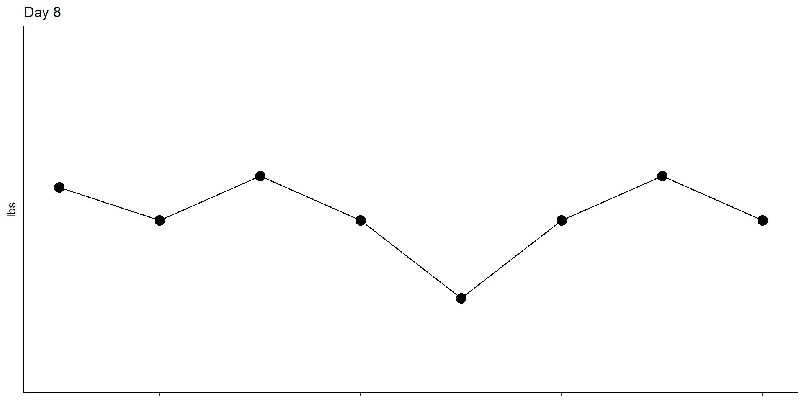
Day 8, back “down” a little again. I know enough to say it’s relatively stable, at least I’m not gaining, but let’s emphasize progress. Watch closely as I attempt to drive progress moving forward.
Day 9, 7/1/25
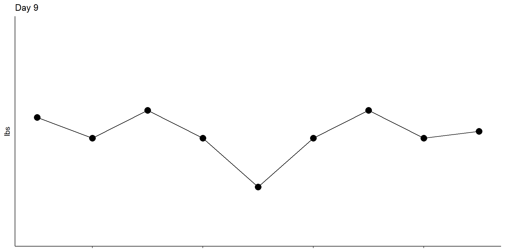
Day 9, I agree with my assessment yesterday that this process is unchanged (so far). My weight seems to be stable around the average. I know enough, I might as well start using a control chart.
First Control Limits Set
I’m using the values from days 1 - 9 to set my baseline or reference control limits. These will be used for the control chart moving forward. The limits represent the current state - based on what I know so far, given the data (and variation observed), I expect future values to be centered around the average, and within the limits - until something happens or changes.
If I observe a point outside the limits, I will have a potential signal that something might be different. If the point is above the upper limit it’s undesirable, it means I most likely gained weight. A point below the lower limit is desirable - this shows that I probably have actually reduced my weight.
Control charts are so valuable, because they’re going to help me not worry if it looks like I’ve gained, and they will help me know when I’m progressing in the right direction. Without the limits to put the data in context, the variation in the data makes it hard to know what’s really happening point to point.
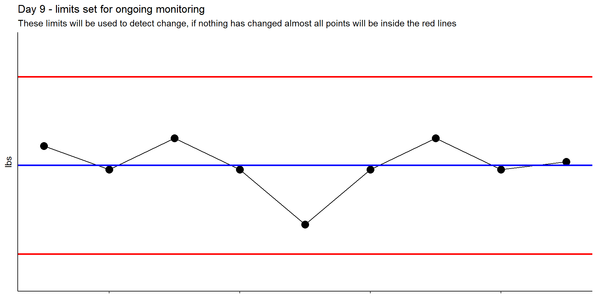
To put this in context, our best estimate of my current weight is the blue line. The lower limit (red) is over 2 pounds less than the average.
I might say: “Given how much variation there is in the data from day to day, it will be difficult to detect a change unless it is more than 2 pounds different from where we are starting”.
I can’t reliably detect anything less than a 2 - 2.5 lb change! That’s good to know - I won’t get discouraged. It might take 1, 2, or even 3 weeks to lose that much.